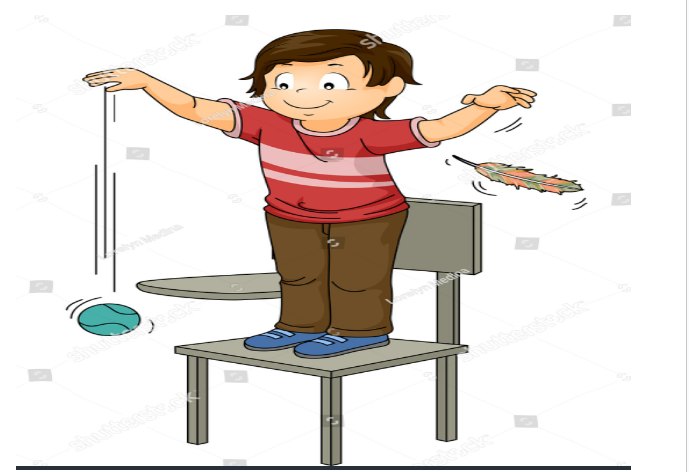

Remedial Instructional Design: ICCR
INTRODUCTION
You have already learned in the previous units about the cognitive conflict-mediated conceptual change theory underlying the remediation of misconceptions. The theory is a popular theory in the literature used by researchers and teachers concerned with misconceptions and their remediation. The theoretical inputs have been translated into well-planned instructional designs by several researchers. Following the conceptual change theory that you have learned in Unit 3, the present module presents a validated instructional design for the remediation of misconceptions. The illustrated lesson plan based on the design will help you develop insights into developing your own lessons.
UNIT OBJECTIVES
This unit will help you to
- Know about the instructional design based on the theory of Conceptual Change.
- Comprehend the elements of the instructional design viz. Initiation, Conflict, and Resolution for Remediation of Misconceptions.
- Develop insight into the relation between the elements of the proposed design and the theoretical aspects of conceptual change.
- Design their own lessons for remediation following the ICCR design.
ICCR Instructional Design
The ICCR ( Initiation-Conflicting Condition-Resolution) design, which has been tested to be valid by the presenters of this module, is described in this section.
The ICCR is a three-phase instructional design viz. Initiation, Conflicting Condition and Resolution.
Initiation:
The teacher, in this phase, creates an amicable environment in the classroom. He or She then exposes the students to some learning material.
The material is such that :
- The students need to use the target concept to interpret the material/solve the problem.
- they can successfully interpret the material or solve the problem using their existing knowledge structure related to the target concept.
The purpose of the initiation phase is to help the student recall, understand and use their understanding of the idea/concept in solving the problem at hand.
The knowledge structure they use in this phase also provides baseline data with which they compare their experience in the next phase. Such comparison helps them realize the discrepancy in their cognitive structure.
ILLUSTRATION:

Example :
By using Questioning skill we can start.
Que by Teacher :
The state in which an object is immovable?
Ans by students: The steady state.
Now we can use demonstration skill
Activity: A ball is throwing in upward direction
Que by teacher : When we are throwing the ball in upward direction, what will be the state of ball?
Ans by students : The ball will be in movable state.
Que by Teacher: Why is the ball first going to upward then come back to the ground?
Ans by students: No answer
SAQ:
- Why do you think the initiation phase is planned to make the students succeed in their learning effort?
- Think of a concept and the corresponding material to initiate the students in the remedial instruction.
This new learning material/problem is such that:
Conflicting Condition:
The teacher, in the second phase, creates conflicting conditions in the classroom.
The conflicting situation is created by presenting additional learning material/problems.
This new learning material/problem is such that:
- The students try to interpret the material or solve the problem.
- The student uses their existing knowledge structure as in the initiation phase to interpret or solve the problem.
- The student with conceptual clarity is able to flexibly use their knowledge structure to solve the additional problem.
- However, the student fails to interpret the new material or solve the problem in this phase IF they have any misconception inherent in their existing knowledge structure.
A state of cognitive conflict is thus aroused among the students having misconceptions.
The student is assumed to be motivated to restructure their knowledge so that they are able to interpret the new learning material.
ILLUSTRATION:

EXAMPLE:
Activity: Take one heavy iron ball and a light weight feather and drop them one by one from a certain height.

Then ask question
Que: Which of them reached first at ground?
Ans: Iron ball
Que: Why did the feather reached at ground after iron ball?
Ans: Because iron ball is heavier than feather.
Activity: show a resource link ::https://youtu.be/QyeF-_QPSbk
Then ask question: Why both were not reached simultaneously in the class?
Ans: No answer and Now cognitive conflicts created.
SAQ:
- Why do certain students fail to interpret the learning material in the conflicting condition?
- What is the purpose of creating conflicting conditions in the remedial instruction?
Resolution:
The student was initially successful in interpreting the learning material using their knowledge structure. However, if they have misconceptions they fail in their attempt to interpret the material in the conflicting condition. Cognitive conflict is created as a drive to initiate conceptual change.
The teacher, therefore, helps the students in resolving the conflict by facilitating, guiding and supporting students in a conceptual process change. This is the resolution phase of the design.
It involves

SAQ:
- What is cooperative learning?
- What are the different activities in the Resolution phase of the design?
- What is the role of the students and teachers in the resolution phase of the design?
ADDITIONAL RESOURCES:
| Itakura Method http://link.springer.com/article/10.1007/s10972-008-9105-8 Source:Isabelle & Groot (2008) |
Conceptual change: Using status as a metacognitive toolhttp://serc.carleton.edu/resources/40464.html Source: Beeth, M.E. (1998) |
|---|